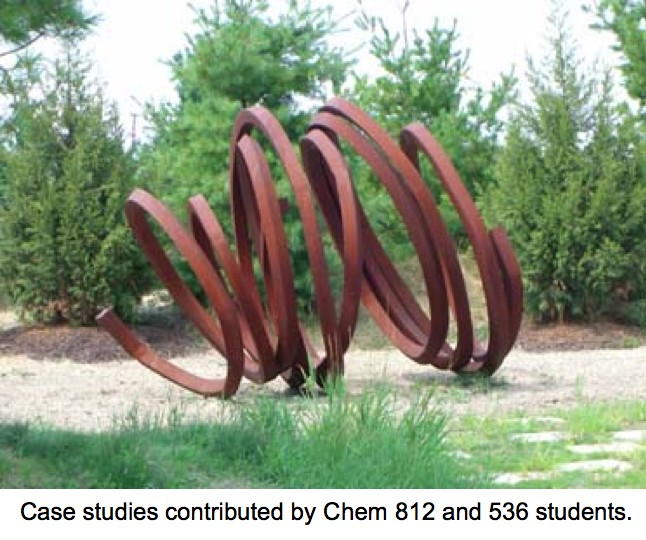

METALS IN MEDICINE AND THE ENVIRONMENT
Metals
An Online Resource
Topics
Aluminium
Arsenic 1
2
Bismuth
Cobalt
Copper 1
2
Cadmium 1
2
Fluorine
Gadolinium
Gold 1
2
Iron 1
2
Lead 1
2
3
Lutetium
Manganese
Mercury 1
2
3
Molybdenum
Nickel 1
2
Platinum
Silver
Technetium
Thallium
Thorium
Tin 1
2
Titanium
Tungsten
Uranium
Vanadium
Zinc

Alzheimer's 1
2
Antibiotics
Antifouling Paint
Arthritis
Ayurvedic Medicine
Breast Feeding
Cancer Therapy
Cattle Feed
Cerebral Ischemia
Chelation Therapy
Chernobyl
Chicken Feed
Chocolate
Cigarettes
Coal 1
2
Copper Mining
Cremation
Diabetes
Electronic Waste
Hat Making
Hard Metal Disease
Hybrid Cars
Imaging 1
2
3
4
Industrial Pollution
Jewelry Allergy
Lead Poisoning
Lewisite
Magnetic Particles
Makeup
Mountain Top Removal
MRI Imaging
Neurotoxicity
Nuclear Power
Nuclear Weapons
Ouch Ouch Disease
Peripheral Neuropathy
PET Imaging
Photodynamic Therapy
Phytoremediation
Pregnancy
Radioactivity 1
2
Seafood
Sunscreens
Tattoos
Vaccines
Wound Healing